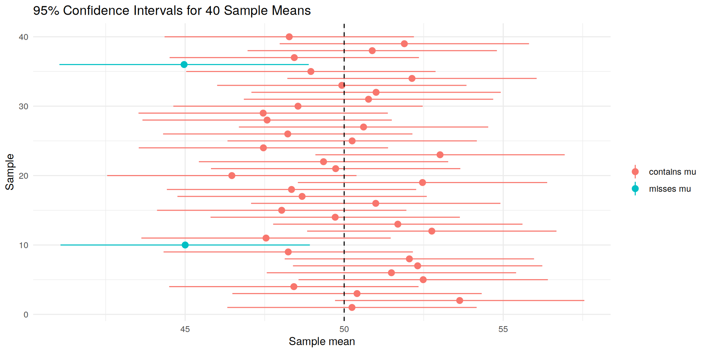
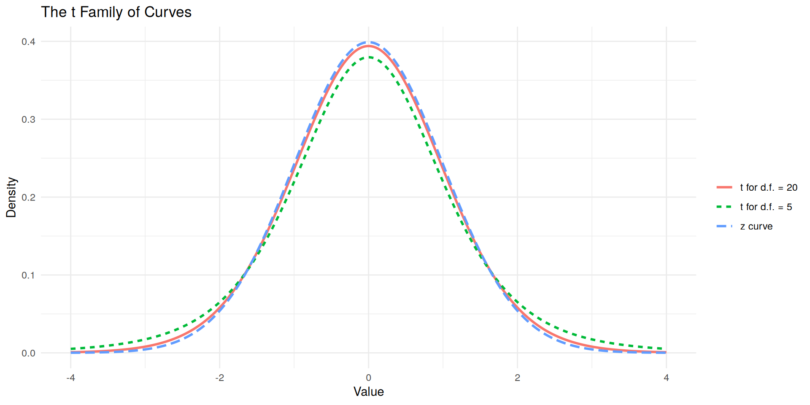
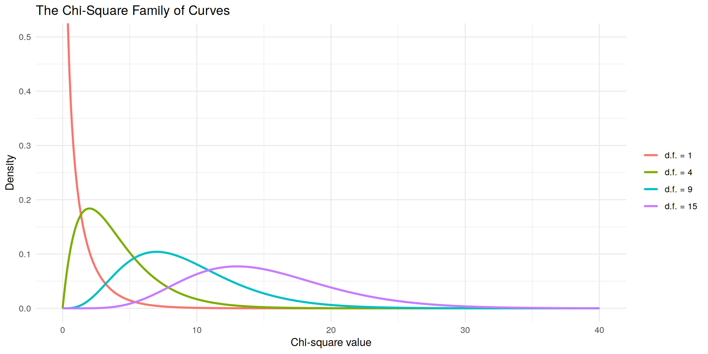

| Confidence | alpha | z |
|---|---|---|
| 90% | 0.10 | 1.645 |
| 95% | 0.05 | 1.960 |
| 99% | 0.01 | 2.576 |
Statistics
Chapter 7: Confidence Intervals and Sample Size
Yu-You Liou
Shih Chien University
2026-09-20
Overview
Chapter 7 is about estimation — using a sample statistic to estimate a population parameter, with a stated confidence level and a stated sample size.
| Section | Topics |
|---|---|
| 7-1 | Estimation; point estimates; properties of a good estimator; interval estimates; confidence level and interval; critical value z_{\alpha/2}; margin of error |
| 7-2 | Confidence interval for the mean, \sigma known; assumptions; rounding rule; minimum sample size |
| 7-3 | The t distribution; degrees of freedom; confidence interval for the mean, \sigma unknown; z versus t |
Overview (continued)
| Section | Topics |
|---|---|
| 7-4 | Sample proportion \hat{p} and \hat{q}; confidence interval for a proportion; minimum sample size |
| 7-5 | The chi-square distribution; confidence intervals for a variance and a standard deviation |
Chapter Objectives
After completing this chapter, you should be able to
- Find the confidence interval for the mean when \sigma is known.
- Determine the minimum sample size for finding a confidence interval for the mean.
- Find the confidence interval for the mean when \sigma is unknown.
- Find the confidence interval for a proportion.
- Determine the minimum sample size for finding a confidence interval for a proportion.
- Find a confidence interval for a variance and a standard deviation.
Section 7-1: Confidence Intervals
Estimation
One aspect of inferential statistics is estimation: the process of estimating the value of a parameter from information obtained from a sample.
Sample measures (statistics) are used to estimate population measures (parameters) — a sample mean estimates a population mean, a sample proportion estimates a population proportion. Statistics used this way are called estimators.
Estimation
Estimation is the process of estimating the value of a parameter from information obtained from a sample.
Common Assumptions for the Procedures in This Chapter
- The sample must be randomly selected.
- Either the sample size is n \geq 30, or the population is normally or approximately normally distributed when n < 30.
Check the second assumption with the Chapter 6 methods: look at the histogram for a bell shape, check for outliers, and inspect a normal quantile plot.
Point Estimates
A college president selects a random sample of 100 students and finds their average age to be 22.3 years. Inferring that the average age of all students is 22.3 years is a point estimate.
Point Estimate
A point estimate is a specific numerical value estimate of a parameter. The best point estimate of the population mean \mu is the sample mean \bar{X}.
Three Properties of a Good Estimator
- The estimator should be an unbiased estimator — the expected value (the mean of the estimates obtained from samples of a given size) equals the parameter being estimated.
- The estimator should be consistent — as the sample size increases, the value of the estimator approaches the value of the parameter estimated.
- The estimator should be a relatively efficient estimator — of all the statistics that can be used to estimate a parameter, it has the smallest variance.
Interval Estimates
A sample mean is almost always somewhat different from the population mean because of sampling error, and there is no way of knowing how close a particular point estimate is to \mu. For that reason statisticians prefer an interval estimate.
Interval Estimate
An interval estimate of a parameter is an interval or a range of values used to estimate the parameter. This estimate may or may not contain the value of the parameter being estimated.
An interval estimate for the average age of all students might be 21.9 < \mu < 22.7, or 22.3 \pm 0.4 years. An interval estimate for a proportion might be 0.107 < p < 0.113, or 11\% \pm 0.3\%.
Confidence intervals may also be written with parentheses: (21.9,\ 22.7) and (10.7\%,\ 11.3\%).
Confidence Level and Confidence Interval
Confidence Level
The confidence level of an interval estimate of a parameter is the probability that the interval estimate will contain the parameter, assuming that a large number of samples are selected and that the estimation process on the same parameter is repeated.
Confidence Interval
A confidence interval is a specific interval estimate of a parameter determined by using data obtained from a sample and by using the specific confidence level of the estimate.
Three common confidence intervals are used: the 90%, the 95%, and the 99% confidence intervals.
Confidence Level and Confidence Interval
A population has a fixed value for the mean or proportion. A confidence interval constructed from one sample either includes that parameter or it does not. If 95% confidence intervals were constructed for all possible samples of a specific size, 95% of them would contain the population parameter.
To be more confident — 99% instead of 95% — you must make the interval wider. A 99% interval for the mean age of college students might be 21.7 < \mu < 22.9, or 22.3 \pm 0.6. Hence a tradeoff occurs.
Caution
The confidence level describes the long-run behaviour of the procedure, not one particular interval. Once an interval has been computed, the parameter is either in it or it is not.
The Critical Value z_{\alpha/2}
The Greek letter \alpha represents the total area in both tails of the standard normal distribution curve, and \alpha/2 represents the area in each tail. The value z_{\alpha/2} is called a critical value.
The stated confidence level is the percentage equivalent of 1 - \alpha:
- 95% confidence interval: \alpha = 0.05, since 1 - 0.05 = 0.95
- 99% confidence interval: \alpha = 0.01, since 1 - 0.01 = 0.99
The Critical Value z_{\alpha/2}
Table A-4 is the paper route to these critical values; qnorm() is the R route. For a 95% confidence interval z_{\alpha/2} = 1.960, and for a 99% confidence interval z_{\alpha/2} = 2.576.
Margin of Error
Margin of Error
The margin of error, also called the maximum error of the estimate, is the maximum likely difference between the point estimate of a parameter and the actual value of the parameter.
In the age-of-students example, where the confidence interval is 21.9 < \mu < 22.7 or 22.3 \pm 0.4, the margin of error is 0.4. For the proportion interval 10.7\% < p < 11.3\%, or 11\% \pm 0.3\%, the margin of error is 0.003, or 0.3%.
For a specific value, say \alpha = 0.05, 95% of the sample means or proportions will fall within this error value on either side of the population mean or proportion.
95% Confidence Intervals in R
Prepare data — repeated sampling from a population with \mu = 50, \sigma = 10, n = 25.
set.seed(2023)
pop_mean <- 50
pop_sd <- 10
sample_size <- 25
margin_error <- qnorm(0.975) * pop_sd / sqrt(sample_size)
intervals <- tibble(
sample_id = 1:40,
sample_mean = replicate(40, mean(rnorm(sample_size, pop_mean, pop_sd)))) |>
mutate(lower = sample_mean - margin_error,
upper = sample_mean + margin_error,
result = if_else(lower <= pop_mean & pop_mean <= upper,
"contains mu", "misses mu"))
sum(intervals$result == "contains mu")[1] 3895% Confidence Intervals in R
Draw figure
ggplot(intervals, aes(x = sample_id, y = sample_mean, color = result)) +
geom_pointrange(aes(ymin = lower, ymax = upper)) +
geom_hline(yintercept = pop_mean, linetype = "dashed") +
coord_flip() +
labs(title = "95% Confidence Intervals for 40 Sample Means",
x = "Sample", y = "Sample mean", color = "") +
theme_minimal()
About 95% of the intervals contain \mu; the ones that miss are the price of sampling variability.
Section 7-2: Confidence Intervals for the Mean When \sigma Is Known
Assumptions and Formula
Assumptions for Finding a Confidence Interval for a Mean When \sigma Is Known
- The sample is a random sample.
- Either n \geq 30 or the population is normally distributed when n < 30.
Robust
A statistical technique is robust when the distribution of the variable can depart somewhat from normality and valid conclusions can still be obtained.
When you estimate a population mean you should use the sample mean: the means of samples vary less than medians or modes when many samples are drawn from the same population.
Assumptions and Formula
Formula for the Confidence Interval of the Mean When \sigma Is Known
\bar{X} - z_{\alpha/2}\left(\frac{\sigma}{\sqrt{n}}\right) < \mu < \bar{X} + z_{\alpha/2}\left(\frac{\sigma}{\sqrt{n}}\right)
For a 90% confidence interval z_{\alpha/2} = 1.645; for a 95% confidence interval z_{\alpha/2} = 1.960; and for a 99% confidence interval z_{\alpha/2} = 2.576.
The term z_{\alpha/2}\left(\sigma/\sqrt{n}\right) is the margin of error.
Rounding Rule for a Confidence Interval for a Mean
When computing a confidence interval for a population mean from raw data, round off to one more decimal place than the number of decimal places in the original data.
When computing it from a sample mean and a standard deviation, round off to the same number of decimal places as given for the mean.
Example 7-1
Air-Freight Transit Time to Osaka
A logistics analyst at a Taipei freight forwarder wants to estimate the mean transit time, in hours, of air-freight shipments from Taoyuan to Osaka. A random sample of 49 shipments had a mean transit time of 34.0 hours. Company records give a population standard deviation of 2.8 hours. Find the best point estimate of the mean and the 95% confidence interval for the population mean.
(hypothetical data)
Example 7-1
Solution
Step 1 The best point estimate of the mean is 34.0 hours.
Step 2 For the 95% confidence interval, use z_{\alpha/2} = 1.96.
34.0 - 1.96\left(\frac{2.8}{\sqrt{49}}\right) < \mu < 34.0 + 1.96\left(\frac{2.8}{\sqrt{49}}\right) 34.0 - 0.8 < \mu < 34.0 + 0.8 \mathbf{33.2 < \mu < 34.8}
Example 7-1
Solution
Compute in R
[1] 0.8[1] 33.2 34.8One can say with 95% confidence that the interval between 33.2 and 34.8 hours contains the population mean transit time, based on a sample of 49 shipments.
Example 7-2
Value of Cross-Border Orders
A cross-border e-commerce team wants to estimate the average value, in US dollars, of the orders its Taiwanese sellers ship overseas. A random sample of 64 orders had a mean value of 84.5 dollars. Assume the population standard deviation is 12.0 dollars. Find the best point estimate of the mean and the 99% confidence interval of the population mean.
(hypothetical data)
Example 7-2
Solution
Step 1 The best point estimate of the population mean is 84.5 dollars.
Step 2 Use z_{\alpha/2} = 2.576 for the 99% confidence interval.
84.5 - 2.576\left(\frac{12.0}{\sqrt{64}}\right) < \mu < 84.5 + 2.576\left(\frac{12.0}{\sqrt{64}}\right) 84.5 - 3.9 < \mu < 84.5 + 3.9 \mathbf{80.6 < \mu < 88.4}
Example 7-2
Solution
Compute in R
[1] 3.9[1] 80.6 88.4One can be 99% confident that the mean value of a cross-border order is between 80.6 and 88.4 dollars.
Finding Other Values of z_{\alpha/2}
Confidence levels other than 90%, 95% and 99% are sometimes used. To find z_{\alpha/2} for a 98% confidence interval:
- Change 98% to 0.98 and find \alpha = 1 - 0.98 = 0.02.
- Divide by 2: \alpha/2 = 0.02/2 = 0.01.
- Subtract 0.01 from 1.0000 to get 0.9900. That is the area you look up in Table A-4, and
qnorm(0.99)returns the same critical value, z_{\alpha/2} = \mathbf{2.326}.
Finding Other Values of z_{\alpha/2}
For confidence intervals, only the positive z score is used in the formula.
| Confidence | alpha_half | z |
|---|---|---|
| 90% | 0.050 | 1.645 |
| 94% | 0.030 | 1.881 |
| 95% | 0.025 | 1.960 |
| 98% | 0.010 | 2.326 |
| 99% | 0.005 | 2.576 |
Example 7-3
Container Dwell Time at Kaohsiung Port
The following data represent the dwell time, in hours, of a random sample of 30 import containers at the Port of Kaohsiung. Assume the population standard deviation is 12.6 hours. Find the 90% confidence interval of the mean.
36.42 28.15 51.70
19.83 44.26 33.08
62.55 25.71 40.19
47.63 30.94 22.38
55.02 38.47 29.66
43.81 26.50 58.24
34.75 49.12 21.07
31.89 45.33 27.46
53.18 37.62 24.91
41.05 32.27 46.88(hypothetical data)
Example 7-3
Solution
Step 1 Find the mean for the data: \bar{X} = 38.002 hours. The population standard deviation is 12.6 hours.
Step 2 Find \alpha/2. For a 90% confidence interval, \alpha = 1 - 0.90 = 0.10 and \alpha/2 = 0.10/2 = 0.05.
Step 3 Find z_{\alpha/2}. The area to the left of the critical value is 1 - 0.05 = 0.9500; that is the column you look up in Table A-4, and qnorm(0.95) returns the same critical value, z_{\alpha/2} = \mathbf{1.645}.
Step 4 Substitute in the formula.
38.002 - 1.645\left(\frac{12.6}{\sqrt{30}}\right) < \mu < 38.002 + 1.645\left(\frac{12.6}{\sqrt{30}}\right) 38.002 - 3.784 < \mu < 38.002 + 3.784 \mathbf{34.218 < \mu < 41.786}
Example 7-3
Solution
Compute in R
dwell_hours <- c(36.42, 28.15, 51.70, 19.83, 44.26, 33.08, 62.55, 25.71, 40.19, 47.63,
30.94, 22.38, 55.02, 38.47, 29.66, 43.81, 26.50, 58.24, 34.75, 49.12,
21.07, 31.89, 45.33, 27.46, 53.18, 37.62, 24.91, 41.05, 32.27, 46.88)
sample_mean <- mean(dwell_hours)
pop_sd <- 12.6
margin_error <- qnorm(0.95) * pop_sd / sqrt(length(dwell_hours))
round(c(mean = sample_mean, margin = margin_error), 3) mean margin
38.002 3.784 [1] 34.218 41.786One can be 90% confident that the mean dwell time of all import containers is between 34.218 and 41.786 hours, based on a sample of 30 containers.
Sample Size for Estimating a Mean
How large a sample is necessary to make an accurate estimate? The answer depends on three things: the margin of error, the population standard deviation, and the degree of confidence.
The formula is derived from the margin-of-error formula E = z_{\alpha/2}\left(\sigma/\sqrt{n}\right), solved for n:
E\sqrt{n} = z_{\alpha/2}\,\sigma \quad \Longrightarrow \quad \sqrt{n} = \frac{z_{\alpha/2} \cdot \sigma}{E}
Formula for the Minimum Sample Size Needed for an Interval Estimate of the Population Mean
n = \left(\frac{z_{\alpha/2} \cdot \sigma}{E}\right)^2
where E is the margin of error. If necessary, round the answer up to obtain a whole number: if there is any fraction or decimal portion in the answer, use the next whole number for n.
Example 7-4
Sample Size for Delivery Time
An operations manager at a food-delivery platform in Taichung wishes to estimate the average delivery time per order to within 2 minutes. She wishes to be 99% confident, and a previous study puts the standard deviation at 4.5 minutes. How many orders should she sample?
(hypothetical data)
Example 7-4
Solution
Since \alpha = 0.01 (or 1 - 0.99), z_{\alpha/2} = 2.576 and E = 2. Substitute in the formula.
n = \left(\frac{z_{\alpha/2} \cdot \sigma}{E}\right)^2 = \left[\frac{(2.576)(4.5)}{2}\right]^2 = 33.59
[1] 33.59[1] 34Round the value up to 34. To be 99% confident that the estimate is within 2 minutes of the true mean, the manager needs to sample at least 34 orders.
Notes on Sample Size
Caution
In most cases in statistics we round off; however, when determining sample size we always round up to the next whole number.
Practical Points
- When the population is large or infinite, or when sampling is done with replacement, the size of the population is irrelevant to the sample size calculation.
- The formula requires \sigma. When \sigma is unknown, estimate it with the standard deviation s from a previous sample, or by dividing the range by 4.
- An interval estimate is often reported in words: “an American family of two spends an average of $84 per week for groceries, accurate within $3 with 95% confidence” means 81 < \mu < 87.
Section 7-3: Confidence Intervals for the Mean When \sigma Is Unknown
The t Distribution
Usually \sigma is unknown and is estimated by s. Critical values greater than z_{\alpha/2} are then needed, especially for small n; they come from the Student’s t distribution.
Characteristics of the t Distribution
Similar to the standard normal distribution:
- It is bell-shaped.
- It is symmetric about the mean.
- The mean, median and mode are equal to 0 and are located at the center of the distribution.
- The curve approaches but never touches the x axis.
Different from the standard normal distribution:
- The variance is greater than 1.
- The t distribution is a family of curves based on degrees of freedom, which is related to sample size.
- As the sample size increases, the t distribution approaches the standard normal distribution.
The t Family of Curves
Prepare data
The t Family of Curves
Draw figure

Degrees of Freedom
Degrees of Freedom
The degrees of freedom are the number of values that are free to vary after a sample statistic has been computed, and they tell the researcher which specific curve to use when a distribution consists of a family of curves.
If the mean of 5 values is 10, then 4 of the 5 values are free to vary; once 4 are chosen the fifth must be a specific number so that the sum is 50. Hence \text{d.f.} = 5 - 1 = 4.
The symbol d.f. is used for degrees of freedom. For a confidence interval for the mean, \text{d.f.} = n - 1. (For some tests later in the book the degrees of freedom are not n - 1.)
Caution
The values t_{\alpha/2} come from the row labelled Confidence Intervals at the top of Table A-5. The rows labelled One tail and Two tails belong to Chapter 8 and should not be used here. When d.f. is greater than 30 and falls between two printed rows, the table convention is to round d.f. down to the nearest row (a conservative choice): d.f. = 68 is read as 65. That convention is a lookup aid; qt() takes the exact d.f., and where the two differ these slides report the value R computes.
Example 7-5
Finding a t Critical Value
Find the t_{\alpha/2} value for a 95% confidence interval when the sample size is 18.
Example 7-5
Solution
The \text{d.f.} = 18 - 1, or 17. Find 17 in the left column of Table A-5 and 95% in the row labelled Confidence Intervals; qt(0.975, df = 17) returns the same critical value, t_{\alpha/2} = \mathbf{2.110}.
In R a confidence-interval critical value is always qt(1 - alpha/2, df = n - 1); for a 95% interval that is qt(0.975, df = n - 1).
Formula for the Mean When \sigma Is Unknown
Formula for a Specific Confidence Interval for the Mean When \sigma Is Unknown
\bar{X} - t_{\alpha/2}\left(\frac{s}{\sqrt{n}}\right) < \mu < \bar{X} + t_{\alpha/2}\left(\frac{s}{\sqrt{n}}\right)
The degrees of freedom are n - 1.
Assumptions for Finding a Confidence Interval for a Mean When \sigma Is Unknown
- The sample is a random sample.
- Either n \geq 30 or the population is normally distributed when n < 30.
Example 7-6
Weekday Occupancy of Taipei Hotels
A random sample of 16 business hotels in Taipei had a mean weekday occupancy rate of 72.4%. The standard deviation of the sample was 6.8 percentage points. Assume the variable is normally distributed. Find the 95% confidence interval of the population mean weekday occupancy rate.
(hypothetical data)
Example 7-6
Solution
\bar{X} = 72.4, s = 6.8, n = 16.
Since \sigma is unknown and s must replace it, the t distribution is used. With 15 degrees of freedom, t_{\alpha/2} = 2.131.
72.4 - 2.131\left(\frac{6.8}{\sqrt{16}}\right) < \mu < 72.4 + 2.131\left(\frac{6.8}{\sqrt{16}}\right) 72.4 - 3.6 < \mu < 72.4 + 3.6 \mathbf{68.8 < \mu < 76.0}
Example 7-6
Solution
Compute in R
[1] 3.6[1] 68.8 76.0One can be 95% confident that the population mean weekday occupancy rate of Taipei business hotels is between 68.8% and 76.0%.
Example 7-7
Monthly Revenue of a Night-Market Stall
The data represent the monthly revenue, in thousands of NT dollars, of a night-market beverage stall for a random sample of 7 months. Find the 99% confidence interval for the mean monthly revenue.
268 292 305 318 331 347 384(hypothetical data)
Example 7-7
Solution
Step 1 Find the mean and standard deviation for the data: \bar{X} = 320.7 and s = 38.0.
Step 2 Find t_{\alpha/2} for a 99% confidence interval with \text{d.f.} = 6. Table A-5 and qt(0.995, df = 6) both give 3.707.
Step 3 Substitute in the formula and solve.
320.7 - 3.707\left(\frac{38.0}{\sqrt{7}}\right) < \mu < 320.7 + 3.707\left(\frac{38.0}{\sqrt{7}}\right) 320.7 - 53.2 < \mu < 320.7 + 53.2 \mathbf{267.5 < \mu < 373.9}
Example 7-7
Solution
Compute in R
monthly_revenue <- c(268, 292, 305, 318, 331, 347, 384)
sample_size <- length(monthly_revenue)
sample_mean <- mean(monthly_revenue)
sample_sd <- sd(monthly_revenue)
margin_error <- qt(0.995, df = sample_size - 1) * sample_sd / sqrt(sample_size)
round(c(mean = sample_mean, sd = sample_sd, margin = margin_error), 1) mean sd margin
320.7 38.0 53.2 [1] 267.5 373.9One can be 99% confident that the mean monthly revenue of the stall is between 267.5 and 373.9 thousand NT dollars, based on a sample of 7 months.
When to Use z or t
Decision Rule (Figure 7-8)
- Is \sigma known? Yes: use z_{\alpha/2} values and \sigma in the formula.
- Is \sigma known? No: use t_{\alpha/2} values and s in the formula.
In either case, if n < 30 the variable must be normally distributed.
When to Use z or t
knitr::kable(data.frame(
Situation = c("sigma known, n >= 30", "sigma known, n < 30 (normal)",
"sigma unknown, n >= 30", "sigma unknown, n < 30 (normal)"),
Use = c("z and sigma", "z and sigma", "t and s", "t and s"),
R = c("qnorm(1 - alpha/2)", "qnorm(1 - alpha/2)",
"qt(1 - alpha/2, df = n - 1)", "qt(1 - alpha/2, df = n - 1)")),
align = "c")| Situation | Use | R |
|---|---|---|
| sigma known, n >= 30 | z and sigma | qnorm(1 - alpha/2) |
| sigma known, n < 30 (normal) | z and sigma | qnorm(1 - alpha/2) |
| sigma unknown, n >= 30 | t and s | qt(1 - alpha/2, df = n - 1) |
| sigma unknown, n < 30 (normal) | t and s | qt(1 - alpha/2, df = n - 1) |
Section 7-4: Confidence Intervals and Sample Size for Proportions
Proportions
A proportion represents a part of a whole; it can be expressed as a fraction, a decimal or a percentage. If 12% of the parcels a courier delivers in Taipei go to a convenience-store pickup point, then 12\% = 0.12 = \frac{12}{100} = \frac{3}{25}, and the probability that a randomly selected parcel goes to a pickup point is 0.12.
Symbols Used in Proportion Notation
p = \text{population proportion} \qquad \hat{p} = \text{sample proportion (read "p hat")}
For a sample proportion,
\hat{p} = \frac{X}{n} \qquad \text{and} \qquad \hat{q} = \frac{n - X}{n} \quad \text{or} \quad \hat{q} = 1 - \hat{p}
where X is the number of sample units that possess the characteristic of interest and n is the sample size.
When \hat{p} and \hat{q} are in decimal or fraction form, \hat{p} + \hat{q} = 1; when they are percentages, \hat{p} + \hat{q} = 100\%. The same relations hold for the population: p + q = 1.
Example 7-8
Convenience-Store Pickup
A random sample of 180 online shoppers on a Taiwanese e-commerce platform found that 63 chose convenience-store pickup instead of home delivery. Find \hat{p} and \hat{q}, where \hat{p} is the proportion of shoppers who chose convenience-store pickup.
(hypothetical data)
Example 7-8
Solution
In this case, X = 63 and n = 180.
\hat{p} = \frac{X}{n} = \frac{63}{180} = 0.35 = 35\% \hat{q} = \frac{n - X}{n} = \frac{180 - 63}{180} = \frac{117}{180} = 0.65 = 65\%
p_hat q_hat
0.35 0.65 So 65% of the shoppers chose home delivery instead.
Confidence Intervals for a Proportion
For a point estimate of p, the sample proportion \hat{p} is used; it is unbiased, consistent and relatively efficient. When n is no more than 5% of the population size, the sampling distribution of \hat{p} is approximately normal with mean p and standard deviation \sqrt{pq/n}.
Formula for a Specific Confidence Interval for a Proportion
\hat{p} - z_{\alpha/2}\sqrt{\frac{\hat{p}\hat{q}}{n}} < p < \hat{p} + z_{\alpha/2}\sqrt{\frac{\hat{p}\hat{q}}{n}}
when n\hat{p} and n\hat{q} are each greater than or equal to 5. The margin of error is E = z_{\alpha/2}\sqrt{\hat{p}\hat{q}/n}.
Confidence Intervals for a Proportion
Assumptions for Finding a Confidence Interval for a Population Proportion
- The sample is a random sample.
- The conditions for a binomial experiment are satisfied (see Chapter 5).
Rounding Rule for a Confidence Interval for a Proportion
Round off to three decimal places.
Caution
When a specific percentage is given in a problem, that percentage becomes \hat{p} once it is changed to a decimal. If 12% of the applicants were men, then \hat{p} = 0.12.
Example 7-9
Transfer Experience at Taoyuan Airport
A passenger survey at Taoyuan International Airport sampled 1250 transfer passengers, and 375 of them rated the transfer experience as excellent. Find the 90% confidence interval of the true proportion of transfer passengers who rate the experience as excellent.
(hypothetical data)
Example 7-9
Solution
Step 1 Determine \hat{p} and \hat{q}.
\hat{p} = \frac{X}{n} = \frac{375}{1250} = 0.30 \qquad \hat{q} = 1 - \hat{p} = 1.00 - 0.30 = 0.70
Step 2 Determine the critical value. \alpha = 1 - 0.90 = 0.10, so \alpha/2 = 0.05 and z_{\alpha/2} = 1.645.
Step 3 Substitute in the formula.
0.30 - 1.645\sqrt{\frac{(0.30)(0.70)}{1250}} < p < 0.30 + 1.645\sqrt{\frac{(0.30)(0.70)}{1250}} 0.30 - 0.021 < p < 0.30 + 0.021 \mathbf{0.279 < p < 0.321} \qquad \text{or} \qquad 27.9\% < p < 32.1\%
Example 7-9
Solution
Compute in R
p_hat n_p_hat n_q_hat
0.3 375.0 875.0 [1] 0.021[1] 0.279 0.321You can be 90% confident that the percentage of transfer passengers who rate the experience as excellent is between 27.9% and 32.1%.
Example 7-10
Buying from Overseas Sellers
A survey of 2400 online shoppers in Taiwan found that 64% had bought at least one item from an overseas seller in the past year. Find the 90% confidence interval of the true proportion of shoppers who buy from overseas sellers.
(hypothetical data)
Example 7-10
Solution
Step 1 Determine \hat{p} and \hat{q}. Here \hat{p} is already given: 64%, or 0.64. Then \hat{q} = 1 - 0.64 = 0.36.
Step 2 Determine the critical value. \alpha = 1 - 0.90 = 0.10, so \alpha/2 = 0.05 and z_{\alpha/2} = 1.645.
Step 3 Substitute in the formula.
0.64 - 1.645\sqrt{\frac{(0.64)(0.36)}{2400}} < p < 0.64 + 1.645\sqrt{\frac{(0.64)(0.36)}{2400}} 0.64 - 0.016 < p < 0.64 + 0.016 \mathbf{0.624 < p < 0.656} \qquad \text{or} \qquad 62.4\% < p < 65.6\%
Example 7-10
Solution
Compute in R
[1] 0.016[1] 0.624 0.656You can say with 90% confidence that the true percentage of shoppers who buy from overseas sellers is between 62.4% and 65.6%.
Sample Size for Proportions
Formula for Minimum Sample Size Needed for Interval Estimate of a Population Proportion
n = \hat{p}\hat{q}\left(\frac{z_{\alpha/2}}{E}\right)^2
If necessary, round up to obtain a whole number.
There are two situations to consider:
- If some approximation of \hat{p} is known (for example, from a previous study), that value is used in the formula.
- If no approximation of \hat{p} is known, use \hat{p} = 0.5. This gives a sample size large enough to guarantee an accurate prediction, because the product \hat{p}\hat{q} is at a maximum when \hat{p} = \hat{q} = 0.5.
The disadvantage of the second method is that it can lead to a larger sample size than is necessary.
Sample Size for Proportions
Prepare data
The product \hat{p}\hat{q} is largest at \hat{p} = \hat{q} = 0.5. Using that maximum value yields the largest possible value of n for a given margin of error and a given confidence interval.
Sample Size for Proportions
Example 7-11
Mobile Payment at Checkout
A market-research team wishes to estimate, with 95% confidence, the proportion of Taiwanese online shoppers who pay with a mobile wallet at checkout. A previous study shows that 65% of shoppers did so. The team wishes to be accurate within 3% of the true proportion. Find the minimum sample size necessary.
(hypothetical data)
Continued in Example 7-12
Example 7-11
Solution
Since z_{\alpha/2} = 1.960, E = 0.03, \hat{p} = 0.65 and \hat{q} = 0.35, then
n = \hat{p}\hat{q}\left(\frac{z_{\alpha/2}}{E}\right)^2 = (0.65)(0.35)\left(\frac{1.960}{0.03}\right)^2 = 971.04
[1] 971.04[1] 972Which, when rounded up, is 972 shoppers to interview.
Example 7-12
No Previous Study
In Example 7-11 assume that no previous study was done, so no approximation of \hat{p} is available. Find the minimum sample size necessary to be accurate within 3% of the true proportion.
Example 7-12
Solution
Here we do not know the values of \hat{p} and \hat{q}, so we use \hat{p} = 0.5 and \hat{q} = 0.5, with E = 0.03 and z_{\alpha/2} = 1.960.
n = \hat{p}\hat{q}\left(\frac{z_{\alpha/2}}{E}\right)^2 = (0.5)(0.5)\left(\frac{1.960}{0.03}\right)^2 = 1067.07
[1] 1067.07[1] 1068Hence 1068 shoppers must be interviewed when \hat{p} is unknown — 96 more than are needed when \hat{p} is known.
Sample Size for Proportions
Caution
In determining the sample size, the size of the population is irrelevant. Only the degree of confidence and the margin of error are necessary to make the determination.
Section 7-5: Confidence Intervals for Variances and Standard Deviations
The Chi-Square Distribution
The variance and standard deviation of a variable are as important as the mean. When pipes that must fit together are made, the variation of the diameters must stay small; in medicines, the variance of the amount of medication in each pill decides whether patients receive the proper dosage.
These confidence intervals need a new distribution: the chi-square distribution, written \chi^2 (Greek letter chi, pronounced “ki”). It is obtained from the values of (n-1)s^2/\sigma^2 for random samples from a normally distributed population with variance \sigma^2.
Characteristics of the Chi-Square Distribution
- All chi-square values are greater than or equal to 0.
- The chi-square distribution is a family of curves based on the degrees of freedom.
- The area under each chi-square distribution curve is equal to 1.
- The chi-square distributions are positively skewed.
At about 100 degrees of freedom the chi-square distribution becomes somewhat symmetric.
The Chi-Square Family of Curves
Prepare data
The Chi-Square Family of Curves
Draw figure

Finding the Two Critical Values
Because the chi-square distribution is not symmetric, two different values are used in the formulas: \chi^2_{\text{left}} and \chi^2_{\text{right}}.
Table A-6 lists degrees of freedom in the left column and the area to the right of the critical value across the top row. For a 95% confidence interval:
- Change 95% to a decimal and subtract from 1: 1 - 0.95 = 0.05.
- Divide by 2: \alpha/2 = 0.05/2 = 0.025. This column gives \chi^2_{\text{right}}.
- Subtract \alpha/2 from 1: 1 - 0.025 = 0.975. This column gives \chi^2_{\text{left}}.
- Read the row for \text{d.f.} = n - 1.
Caution
If the number for the degrees of freedom is not printed in Table A-6, use the closest lower value in the table. For example, for \text{d.f.} = 53, use \text{d.f.} = 50. This is a conservative approach for a paper lookup; qchisq() takes the exact d.f., and where the two differ these slides report the value R computes.
Example 7-13
Finding Chi-Square Critical Values
Find the values for \chi^2_{\text{right}} and \chi^2_{\text{left}} for a 95% confidence interval when n = 20.
Example 7-13
Solution
To find \chi^2_{\text{right}}, subtract 1 - 0.95 = 0.05; then divide 0.05 by 2 to get 0.025. To find \chi^2_{\text{left}}, subtract 1 - 0.025 = 0.975.
Then use the 0.975 and 0.025 columns of Table A-6 with \text{d.f.} = n - 1 = 20 - 1 = 19.
\chi^2_{\text{right}} = 32.852 \qquad \chi^2_{\text{left}} = 8.907
Formulas for Variance and Standard Deviation
Formula for the Confidence Interval for a Variance
\frac{(n-1)s^2}{\chi^2_{\text{right}}} < \sigma^2 < \frac{(n-1)s^2}{\chi^2_{\text{left}}} \qquad \text{d.f.} = n - 1
Formula for the Confidence Interval for a Standard Deviation
\sqrt{\frac{(n-1)s^2}{\chi^2_{\text{right}}}} < \sigma < \sqrt{\frac{(n-1)s^2}{\chi^2_{\text{left}}}} \qquad \text{d.f.} = n - 1
Useful estimates for \sigma^2 and \sigma are s^2 and s. If the problem gives the sample standard deviation s, be sure to square it; if the problem gives the sample variance s^2, do not square it, since the variance is already in square units.
Formulas for Variance and Standard Deviation
Assumptions for Finding a Confidence Interval for a Variance or Standard Deviation
- The sample is a random sample.
- The population must be normally distributed.
Rounding Rule for a Confidence Interval for a Variance or Standard Deviation
When computing from raw data, round off to one more decimal place than the number of decimal places in the original data.
When computing from a sample variance or standard deviation, round off to the same number of decimal places as given for the sample variance or standard deviation.
Example 7-14
Variation in Batch Defect Rates
A quality engineer at an electronics plant sampled 30 production batches and found that the standard deviation of the defect rate is 1.6 defects per thousand units. Find the 95% confidence interval of the variance and standard deviation of the defect rate. Assume the variable is normally distributed.
(hypothetical data)
Example 7-14
Solution
Since \alpha = 0.05 and the degrees of freedom is 29, the two critical values are \chi^2_{\text{left}} = 16.047 and \chi^2_{\text{right}} = 45.722.
\frac{(30-1)(1.6)^2}{45.722} < \sigma^2 < \frac{(30-1)(1.6)^2}{16.047} \mathbf{1.62 < \sigma^2 < 4.63}
For the standard deviation, take the square root of each limit:
\mathbf{1.27 < \sigma < 2.15}
Example 7-14
Solution
Compute in R
[1] 45.722 16.047[1] 1.62 4.63[1] 1.27 2.15One can be 95% confident that the true variance of the defect rate is between 1.62 and 4.63, and that the true standard deviation is between 1.27 and 2.15 defects per thousand units, based on a sample of 30 batches.
Example 7-15
Daily Call Volume at a Service Centre
Find the 90% confidence interval for the variance and standard deviation of the number of inbound calls received per day at a customer-service centre. A random sample of 10 days has been used. Assume the distribution is approximately normal.
124 127 130 130 135
140 148 155 158 163(hypothetical data)
Example 7-15
Solution
Step 1 Find the variance for the data: s^2 = 198.
Step 2 Find \chi^2_{\text{right}} and \chi^2_{\text{left}} from Table A-6, using 10 - 1 = 9 degrees of freedom. With \alpha/2 = 0.05 and 1 - \alpha/2 = 0.95: \chi^2_{\text{right}} = 16.919 and \chi^2_{\text{left}} = 3.325.
Step 3 Substitute in the formula.
\frac{(10-1)(198)}{16.919} < \sigma^2 < \frac{(10-1)(198)}{3.325} \mathbf{105.3 < \sigma^2 < 535.9} \sqrt{105.3} < \sigma < \sqrt{535.9} \qquad \Longrightarrow \qquad \mathbf{10.3 < \sigma < 23.1}
Example 7-15
Solution
Compute in R
[1] 198[1] 16.919 3.325[1] 105.3 535.9[1] 10.3 23.1One can be 90% confident that the standard deviation of the daily number of inbound calls is between 10.3 and 23.1 calls, based on a random sample of 10 days.
Important Terms
Chapter 7 Vocabulary
assumptions · chi-square distribution · confidence interval · confidence level · consistent estimator · degrees of freedom · estimation · estimator · interval estimate · margin of error · point estimate · proportion · relatively efficient estimator · robust · t distribution · unbiased estimator
Key Formulas
Confidence Intervals for a Mean
Confidence interval of the mean when \sigma is known (when n \geq 30, s can be used if \sigma is unknown):
\bar{X} - z_{\alpha/2}\left(\frac{\sigma}{\sqrt{n}}\right) < \mu < \bar{X} + z_{\alpha/2}\left(\frac{\sigma}{\sqrt{n}}\right)
Confidence interval of the mean when \sigma is unknown, with \text{d.f.} = n - 1:
\bar{X} - t_{\alpha/2}\left(\frac{s}{\sqrt{n}}\right) < \mu < \bar{X} + t_{\alpha/2}\left(\frac{s}{\sqrt{n}}\right)
Sample size for means, where E is the margin of error:
n = \left(\frac{z_{\alpha/2} \cdot \sigma}{E}\right)^2
Key Formulas
Proportions, Variances and Standard Deviations
Confidence interval for a proportion, where \hat{p} = X/n and \hat{q} = 1 - \hat{p}:
\hat{p} - z_{\alpha/2}\sqrt{\frac{\hat{p}\hat{q}}{n}} < p < \hat{p} + z_{\alpha/2}\sqrt{\frac{\hat{p}\hat{q}}{n}} \qquad n = \hat{p}\hat{q}\left(\frac{z_{\alpha/2}}{E}\right)^2
Confidence interval for a variance and for a standard deviation, with \text{d.f.} = n - 1:
\frac{(n-1)s^2}{\chi^2_{\text{right}}} < \sigma^2 < \frac{(n-1)s^2}{\chi^2_{\text{left}}} \qquad \sqrt{\frac{(n-1)s^2}{\chi^2_{\text{right}}}} < \sigma < \sqrt{\frac{(n-1)s^2}{\chi^2_{\text{left}}}}
Key Takeaways
Key point
- Estimation uses a sample statistic to estimate a parameter; a good estimator is unbiased, consistent and relatively efficient, and \bar{X} is the best point estimate of \mu
- A point estimate is a single value; an interval estimate is a range, and its confidence level is the long-run probability that such intervals capture the parameter
- The margin of error (maximum error of the estimate) is the largest likely gap between the point estimate and the parameter; higher confidence means a wider interval
- Use z_{\alpha/2} and \sigma when \sigma is known; use t_{\alpha/2} and s with \text{d.f.} = n - 1 when \sigma is unknown — and if n < 30 the variable must be normally distributed
- Sample sizes come from n = \left(z_{\alpha/2}\sigma/E\right)^2 and n = \hat{p}\hat{q}\left(z_{\alpha/2}/E\right)^2, and are always rounded up; the population size is irrelevant
- For proportions, \hat{p} = X/n and \hat{q} = 1 - \hat{p}, the interval requires n\hat{p} \geq 5 and n\hat{q} \geq 5, and limits are rounded to three decimal places; when \hat{p} is unknown use \hat{p} = 0.5
- Confidence intervals for \sigma^2 and \sigma use the positively skewed chi-square distribution with two critical values, and require a normally distributed population
Acknowledgement
Copyright notice. These teaching materials follow the organization and terminology of Bluman, A. G. (2023). Elementary statistics: A step by step approach (11th ed.). McGraw Hill. All rights in the original work are reserved by its authors and publishers.
Original examples. Every worked example, data set, and R script in these slides was written for this course. The data are hypothetical unless stated otherwise.
Non-commercial use only. These materials are strictly intended for educational purposes and must not be used for commercial gain or profit.
Proper attribution. Any reproduction, distribution, or use of these materials must provide proper attribution to the original source.

Elementary Statistics: A Step by Step Approach